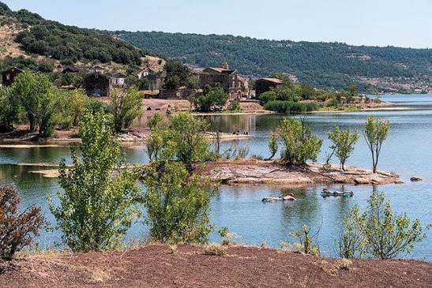
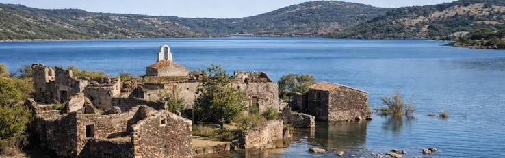

Celles,
le village sauvé des eaux


⟹ Histoire de clocher ⟸
Dans les années 1960, on a vidé Celles de ses habitants pour faire place à un lac. Le lac est venu, mais il s'est arrêté au pied des maisons. Commence alors un demi-siècle d'abandon, de pillage et d'obstination, jusqu'à une renaissance qui ne ressemble à aucune autre.
Celles se tient sur un replat de la vallée du Salagou, au pied du Larzac, à une dizaine de kilomètres au sud de Lodève. Le paysage est l'un des plus étranges de France : des collines couleur de rouille, faites de ruffe, une argilite chargée d'oxyde de fer déposée au Permien, il y a plus de 250 millions d'années. Des coulées et des cheminées de basalte, bien plus récentes (1,5 à 2,5 millions d'années), y dessinent des traînées sombres. Le village lui-même est bâti de cette pierre volcanique.
Au XIXe siècle, la commune compte jusqu'à 120 habitants (1846). On y vit de la vigne, de quelques cultures et de l'élevage de moutons. Au début des années 1960, le village rassemble encore environ 80 personnes, avec son église de la Nativité-de-Notre-Dame, sa mairie, son école, son café et deux commerces.

À la fin des années 1950, le vin du Languedoc se vend mal. Les pouvoirs publics veulent pousser les agriculteurs à remplacer la vigne par des vergers, qui ont besoin de beaucoup d'eau. Le Conseil général de l'Hérault lance un barrage sur le Salagou : il doit constituer une réserve pour l'irrigation et aider à réguler les crues de l'Hérault. La ruffe, imperméable, fait de la vallée une cuvette idéale.
Le chantier dure de 1964 à 1968. Le plan prévoit un remplissage en deux temps : d'abord jusqu'à la cote 139 mètres, puis jusqu'à la cote 150. Or Celles est bâti autour de 143-144 mètres. La première étape l'épargne ; la seconde le noierait. Le village est donc déclaré condamné.
Les terres et les maisons sont rachetées ou expropriées par le Département. Certains vendent, d'autres résistent. Entre le milieu des années 1960 et 1969, les familles partent les unes après les autres. L'école ferme, puis le café et les commerces. En septembre 1969, les dernières familles quittent le village. Joëlle Goudal, future maire, a alors cinq ans : sa famille d'agriculteurs est relogée à plusieurs dizaines de kilomètres, au sud de Montpellier.
La cuvette se remplit plus vite que prévu, après un très gros orage. L'eau recouvre les terres les plus basses de la commune, ses champs et ses chemins, puis s'immobilise à la cote 139. Elle n'ira jamais plus haut.
Le lac devait monter jusqu'à la cote 150. Il s'est arrêté à 139. Les maisons de Celles, elles, sont restées au sec, mais vides.

La seconde phase de remplissage n'est jamais réalisée : les vergers espérés ne se développent pas, et le niveau de 139 mètres suffit. Mais Celles reste officiellement promis à l'engloutissement. Les maisons vides sont pillées : on emporte portes, poutres, tuiles et pierres. Des squatteurs s'installent, les toitures s'effondrent. En 1975, le recensement ne compte plus que cinq habitants sur toute la commune.
Henri Goudal, le père de Joëlle, refuse d'abandonner. Il revient chaque fin de semaine et transforme des ruines au bord de l'eau, face au village, en guinguette, devenue plus tard un hôtel-restaurant et un camping. Il est maire de 1971 à 1995. Avec quelques anciens, il entretient la mairie et l'église, pour que Celles garde son statut de commune.
Car ce statut est menacé : il est question de rattacher Celles au Puech ou à Octon. L'association « Sauvons Celles » porte l'affaire jusqu'au Conseil d'État, qui lui donne raison en 1990. Pour prouver qu'une vie existe encore, la commune produit une photo : un vieil homme et un enfant assis sur un banc. Le vieil homme, surnommé « Bichette », était le gardien du village depuis 1976.
Entre 1985 et 1988, la mairie et l'église sont réhabilitées. En 1996, le Département s'engage officiellement à maintenir le lac à la cote 139 : le danger est écarté. En 2010, il cède au village la pleine propriété des ruines, pour un euro symbolique.
Une fois propriétaire de ses ruines, la commune aurait pu les vendre au plus offrant. Au bord d'un lac qui attire chaque été des centaines de milliers de visiteurs, les résidences secondaires et les locations saisonnières auraient vite remplacé les habitants. Les élues ont fait le choix inverse : aucune maison du bourg n'est vendue.
Les maisons sont confiées par un prêt à usage d'une durée de 35 ans. Le bénéficiaire ne paie pas de loyer, mais il s'engage à reconstruire la maison, à y vivre toute l'année et à y exercer une activité professionnelle permanente. En cas de départ, il ne revend rien : il est indemnisé selon la valeur d'usage des travaux réalisés. Hôtels et gîtes sont exclus du bourg.
Depuis 2024, un fonds de dotation, structure privée à but non lucratif, est propriétaire du foncier racheté à la commune et choisit les candidats. Il est gouverné par trois collèges : les habitants, les élus du territoire et des experts extérieurs.
Les premiers habitants ont des métiers bien concrets : un architecte (Vincent Courteaux, aujourd'hui adjoint à l'urbanisme, auteur de la première maison reconstruite), une infirmière, une boulangère, un menuisier. Fin 2025, un médecin et une sage-femme font partie des cinq familles attendues. Le projet prévoit à terme onze familles en prêt à usage, une douzaine de logements à loyer modéré pour des ménages modestes et des personnes âgées, des bureaux partagés et une « maison de la recherche ».
Le chantier est lent : il a d'abord fallu amener l'eau potable, créer une station d'épuration, installer le téléphone. Mais pour la première fois depuis 1969, des enfants grandissent de nouveau dans le bourg de Celles.
Un 15 août, une châtelaine se rend à la messe de Celles. Un orage fait gonfler le Salagou ; elle promet à la Vierge une chapelle si elle est sauvée, et le muletier offre les grelots de sa mule, les clans en occitan, pour le clocher. La chapelle (XIVe-XVe siècles) domine toujours le lac, et l'on y monte encore en procession chaque 15 août.
En 1990, pour convaincre le Conseil d'État que Celles vivait encore, la commune a présenté la photo d'un vieil homme et d'un enfant sur un banc. Le vieil homme, « Bichette », gardait le village depuis 1976.
Les ruines de Celles ont servi de décor à Zone rouge (1986), un thriller de Robert Enrico avec Sabine Azéma et Richard Anconina.
Depuis 2014, le conseil municipal de Celles est entièrement composé de femmes, menées par Joëlle Goudal, qui se décrivait en 1995 comme une « jeune punkette » au moment de son élection.